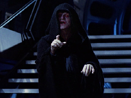

Дарт Вейдер - это центральный персонаж вселенной "Звездных Войн", появляясь в качестве одного из главных антагонистов в оригинальной трилогии Звёздных Войн. Он - Владыка-Ситх, образ падшего рыцаря-джедая Энакина Скайуокера после его перехода на Тёмную сторону Силы. А также являеться учеником императора Палпатина.

Кайло Рен - он сын Хана Соло и Леи Органы, и изначально его звали Бен. Спустя какое-то время после битвы при Эндоре Бен стал одним из учеников возрождённого Ордена Джедаев под наставничеством своего дяди, Люка Скайуокера. Проявляя большой потенциал в навыках управления Силой, Бен был одержим своим дедом, Дартом Вейдером, в результате чего перешел на темную сторону и стал поклоняться верховному лидеру.

Император Палпатин, правил галактической импереей, также был учителем Дарта Вейдера, однако Палпатин был убит в 6 эпизоде своим же учеником Дартом Вейдером когда Палпатин почти убил Люка Скайуокера, сына Дарта Вейдера.